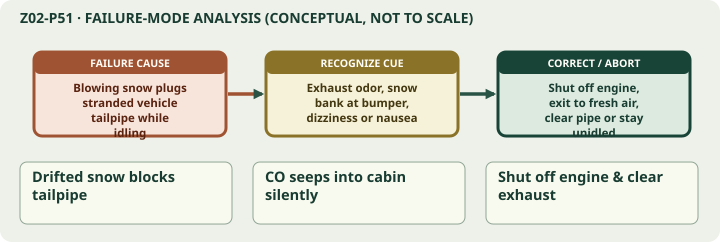

Z02-P51 · Shelter and housing · New manuscript
Keep vehicle exhaust clear of snow and recognize idling CO danger
Prevent lethal exhaust intrusion when using a stranded vehicle as temporary winter weather shelter.
When it applies · Vehicle immobilized in snowdrifts, blizzards or storm closures where staying with the vehicle is safer than walking into poor visibility.
Equipment · Dry blankets/layers, shovel or snow scraper, phone/radio, visibility marker and working CO awareness.

Actions
- Rely primarily on dry layered clothing, blankets and blocked wind inside the vehicle—shelter protection does NOT require continuous engine idling.[E14, E05, E25]
- Before ever briefly running the engine for heat, physically verify the tailpipe and underside around the exhaust are completely clear of snowdrifts and ice—drifting snow can re-block an exhaust pipe quickly.[E14, E25, C16]
- Never run a vehicle engine inside a garage, carport or drifted snowbank enclosure, and crack a downwind window slightly if running briefly while staying awake to monitor for exhaust odor or symptoms.[C16, C07, E14]
Failure recognition · Falling asleep with an idling car while blowing snow packs around the rear bumper and channels odorless carbon monoxide into the cabin.[E14, E25, C16, C07]
Verify · Confirm tailpipe clearance visually before any brief engine run, stay awake while running and keep everyone alert for headache or dizziness.[E25, C07, ED]
Stop or change course · Shut off the engine immediately and get to fresh air if exhaust smells enter the cabin, snow drifts pack under the vehicle or anyone feels dizzy, nauseated or confused; call 911.[C07, C16, T02]
Evidence and editorial notes
- C07 · CPSC · Carbon Monoxide Fact Sheet (current web edition)
- Section: CO poisoning symptoms; what to do if suspected · Conditions: Suspected carbon monoxide exposure
Support: Escape to fresh air immediately and contact emergency services. Symptoms can include headache, dizziness, nausea and confusion.
Limitations: CO is colorless and odorless; symptoms mimic viral illness or altitude fatigue and can incapacitate sleepers without waking. · Conflicting evidence: None; aligns with CDC-CO.
Editorial note: Standard CO emergency stop condition across Z02 and Z03. · Specialist reviewer: Carbon monoxide safety and emergency medicine
Primary source · checked 2026-11-24 - C16 · CDC · Carbon Monoxide Poisoning Basics (current web edition)
- Section: Carbon Monoxide Poisoning Basics > Sources and Prevention · Conditions: Any enclosed or semi-enclosed structure, garage, porch, tent, or vehicle
Support: Never burn charcoal, operate camp stoves, or run fuel-burning heaters inside homes, garages, tents, or vehicles even with doors or windows partly open.
Limitations: Vent cracks and open garage doors do not prevent lethal CO accumulation. · Conflicting evidence: Refutes dangerous myth that cracking a tent vent or garage door makes indoor combustion safe.
Editorial note: Hard-stop rule across all Z02 ventilation and Z03 combustion cards. · Specialist reviewer: Carbon monoxide safety and emergency medicine
Primary source · checked 2026-11-24 - E05 · NWS · What To Do If You're Caught in a Winter Storm (current web edition)
- Section: Outside and find shelter · Conditions: Cold, wet or windy winter conditions
Support: Block wind, stay dry and keep off cold ground. Keep exposure reduction separate from making a fire.
Limitations: Improvised windbreaks do not provide rated thermal protection or snow-load capacity. · Conflicting evidence: None; aligns with CDC-H.
Editorial note: Separates wind, ground, and moisture heat-loss pathways. · Specialist reviewer: Cold-weather shelter specialist
Primary source · checked 2026-11-24 - E14 · NWS · What To Do If You're Caught in a Winter Storm (current web edition)
- Section: In vehicles during a winter storm · Conditions: Vehicle stranded in winter weather with no immediate vehicle hazard
Support: Stay with the vehicle if a safe nearby destination is not obvious. Make the vehicle visible and notify others when possible.
Limitations: Snow-blocked exhaust pipes create rapid lethal CO hazards if an engine is run. · Conflicting evidence: None; keeps shelter decision distinct from idling engine advice.
Editorial note: Used for stranded-vehicle shelter and exhaust-hazard checks. · Specialist reviewer: Winter response and carbon monoxide safety
Primary source · checked 2026-11-24 - E25 · FEMA / Ready.gov · Winter Weather (current web edition)
- Section: Winter Weather > Stay Safe During Winter Storms · Conditions: Extreme cold, drifting snow, and power or travel disruption
Support: Prepare layered clothing, emergency shelter/heat alternatives, and vehicle winter kits; stay indoors during blizzards, protect against frostbite/hypothermia, and keep exhaust vents and exits clear of drifting snow.
Limitations: Drifting snow can block tent vents, doors, and vehicle tailpipes silently overnight. · Conflicting evidence: None; reinforces overnight exit/vent clearance checks.
Editorial note: Supports snow-drift exit maintenance and winter shelter failure recognition. · Specialist reviewer: Cold-weather shelter and emergency management
Primary source · checked 2026-11-24 - T02 · American Red Cross · First Aid Steps (current web edition)
- Section: First Aid Steps > Call 9-1-1 · Conditions: Lay emergency response to unresponsiveness, abnormal breathing or severe bleeding
Support: Activate EMS and get needed equipment. Follow dispatcher directions and act within training.
Limitations: Remote locations may delay EMS arrival, requiring sustained stabilization after activation. · Conflicting evidence: None; aligns with NPS-E.
Editorial note: Mandates early emergency activation and dispatcher adherence. · Specialist reviewer: EMS and wilderness medicine
Primary source · checked 2026-11-24
Source lineage · NWS winter storms, CPSC and CDC CO basics; new manuscript · Classification · New manuscript.